Fundada em 2021, a Vulcan Fit nasceu da visão de seus idealizadores Lucas Andrade e Marina Rocha, dois apaixonados pelo universo do treinamento físico que enxergaram uma lacuna no mercado: a falta de conexão entre equipamentos de qualidade e um acompanhamento verdadeiramente transformador.
Na Vulcan Fit, acreditamos que o corpo humano é a matéria-prima mais valiosa que existe, mas é na rotina, no suor e na disciplina que ele é verdadeiramente lapidado. Nossa missão vai muito além de vender equipamentos ou oferecer horários de aula; nossa missão é forjar campeões da vida real.
Desde a sua criação, a empresa foi construída com base em três pilares: qualidade, disciplina e evolução constante. O que começou como um pequeno projeto idealizado por dois profissionais, rapidamente se transformou em uma marca que inspira pessoas a superarem seus próprios limites todos os dias.
Entendemos que cada jornada é única. Por isso, construímos um ecossistema onde a tecnologia dos nossos produtos encontra a alma do movimento. Não importa se o seu campo de batalha é o tatame, a piscina de natação, o gramado do futebol, o box de crossfit ou a sala de dança. Estamos aqui para garantir que você tenha a melhor armadura e os melhores mentores ao seu lado.
Acreditamos que a qualidade de um acessório é o que separa o limite da superação. Mas o equipamento sozinho não faz o atleta. É por isso que unimos nossos produtos premium ao acompanhamento de profissionais e personais altamente qualificados. Do treino funcional ao treino personalizado, nosso objetivo é garantir que você nunca treine sozinho.
Seja transformando sua casa em um centro de treinamento ou evoluindo em nossas aulas, a Vulcan Fit nasce para ser o combustível da sua chama interna. Não vendemos apenas itens de academia; entregamos as ferramentas para você reconstruir sua confiança e sua força. Nós não apenas treinamos corpos. Nós forjamos destinos.